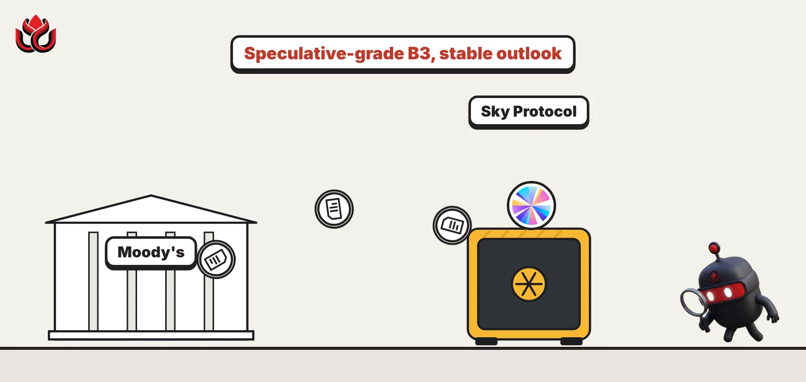
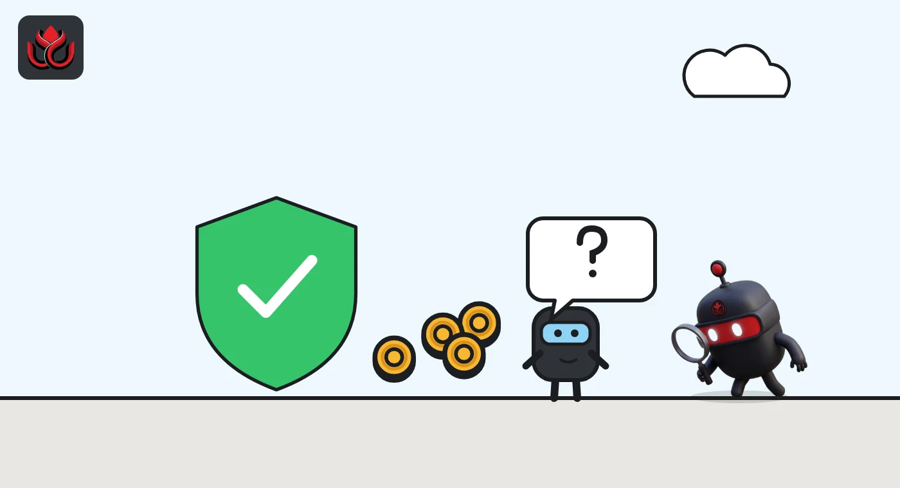
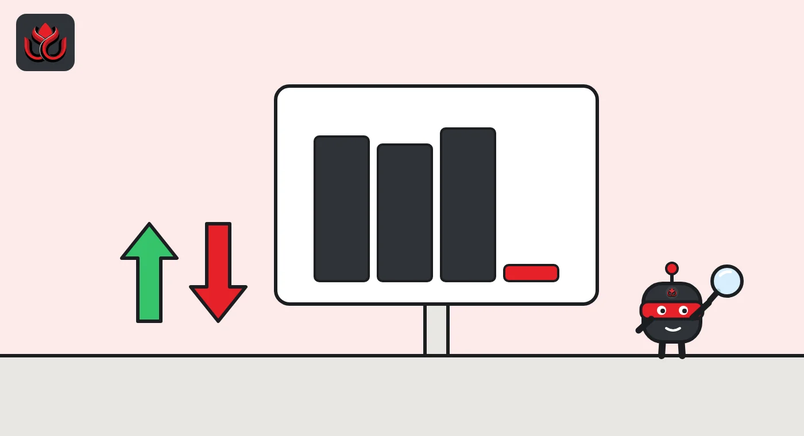

Moody's rates DeFi's Sky B3: just $90 million of capital behind $10 billion of assets
The former MakerDAO, issuer of the USDS and DAI stablecoins, got a speculative-grade B3 rating from Moody's with a stable outlook. Its track record and low losses won praise. Its thin capital did not.

Key points
- Moody's gave Sky Protocol, the former MakerDAO, a speculative-grade B3 rating with a stable outlook on October 6, 2026.
- The weak spot is capital: about $90 million of equity against about $10 billion of assets, roughly 0.9% on our calculation.
- An upgrade needs that ratio above 2.5%. Two or more loss-making quarters, a ratio below 0.5% or USDC below 20% of USDS and DAI could mean a downgrade.
What Moody's decided
Moody's Ratings gave Sky Protocol, formerly MakerDAO, a B3 long-term counterparty risk rating (CRR) with a stable outlook on October 6, 2026, its rating action shows. Sky held about $90 million of its own capital against roughly $10 billion of assets. It is a stablecoin protocol run by a decentralized autonomous organization (DAO), launched in 2017, and issues two dollar stablecoins, USDS and DAI.
A counterparty risk rating measures how likely an entity is to fail on obligations to its counterparties. B3 sits in the speculative part of Moody's scale, several notches below investment grade. Moody's said the rating was solicited, meaning Sky asked for it.
USDS and DAI cannot be redeemed for cash directly. Holders can swap them one-for-one into Circle's USDC through a smart contract called a peg stability module, as long as that module holds enough USDC.
Why B3 and not higher
Moody's credited Sky with a solid, though limited, operating history in DeFi, fairly liquid assets, low historical credit losses and solid profitability. Cumulative losses since 2020 come to about $15 million, slightly under 0.05% a year. In 2025, net profit averaged slightly above 0.5% of total assets.
Capital is the problem. As of September 2026, Sky held about $90 million of tangible common equity (its own loss-absorbing capital) against about $10 billion of tangible managed assets. Moody's listed "very low capitalization, confidence-sensitive stablecoin liabilities" among the main weaknesses. Confidence-sensitive means holders can exit quickly if they lose trust, as in a bank run. Sky's governance targets $150 million of equity over the medium term.
Moody's also pointed to the DAO structure. Sky has no formal incorporation, employees or directors, does not prepare audited financial statements and does not run anti-money laundering or know-your-customer programs. It said voting power is concentrated among a small number of delegates. Its standalone assessment sits five notches below the starting score from Sky's financial profile because of these risks.

What Sky owns
Looking through to the Agents, the specialized sub-DAOs that now do most lending and investing for Sky, Moody's broke the assets down. About 45% to 50% are stablecoins and tokenized money market funds. About 25% are crypto-backed loans, with ETH the largest collateral exposure followed by bitcoin. The rest is tokenized collateralized loan obligations, tokenized private credit and a small amount of real-world loans and other investments.
Liquidity rests mainly on USDC. Sky's benchmark is to hold about 25% of total assets in USDC and roughly $4 billion of cash stablecoins. Moody's thinks Sky could turn its tokenized money market funds and some tokenized loan funds into USDC within a few days. It also noted that Sky has no committed outside credit lines and that governance can temporarily halt swaps.
If losses ever exceed capital, Sky must mint and try to sell new governance tokens. If that is not enough, USDS and DAI would be written down, Moody's said.
What would move the rating
Moody's set clear triggers. The rating could rise if equity divided by managed assets climbs and is expected to stay above 2.5%, with profitability, liquidity and asset risk held steady. It could fall if Sky posts net losses for two or more quarters in a row, if the ratio is expected to stay below 0.5%, or if USDC holdings fall below 20% of USDS and DAI combined. On the September figures, the ratio works out to about 0.9%, our calculation from the reported numbers.
Sky has two ways to move toward the upgrade line: grow its equity by keeping more earnings, or shrink its assets. Shrinking would mean fewer USDS and DAI in circulation, which runs against its business. The stable outlook reflects Moody's expectation that over 12 to 18 months Sky keeps its current profile and that its capital improves modestly.
Sky's capital ratio against Moody's triggers
% (equity / managed assets)
Source: Moody's rating action (October 6, 2026); ratios calculated by LC Insight

Timeline
MakerDAO, now Sky Protocol, launches
Start of the period in which Sky's cumulative losses total about $15 million
Sky holds about $90 million of equity against about $10 billion of assets
Moody's assigns Sky Protocol a B3 CRR, outlook stable
LC Insight analysis
This section is our reading of the facts above, not a statement of fact.
- We think having a rating matters more than the grade. A Moody's opinion gives banks and funds a yardstick they already know, and some institutions can only deal with rated counterparties. B3 opens doors that no rating kept shut.
- The capital ratio is now a public scorecard. On our arithmetic, even Sky's $150 million target would lift it only to about 1.5% at today's size, still well short of the 2.5% upgrade line.
- Expect pressure on Sky to keep more of its earnings instead of spending them on token buybacks or incentives. How governance chooses between those will show up in the next review.
What's next
- Sky's equity figure against the $150 million target
- USDC holdings relative to USDS and DAI supply, a downgrade trigger at 20%
- Whether other DeFi stablecoin protocols seek ratings
Disclaimer. This article is based on public information and the sources listed below as of the update time shown. It is for information only and is not investment, legal or tax advice. Figures may change as companies and authorities publish new data.